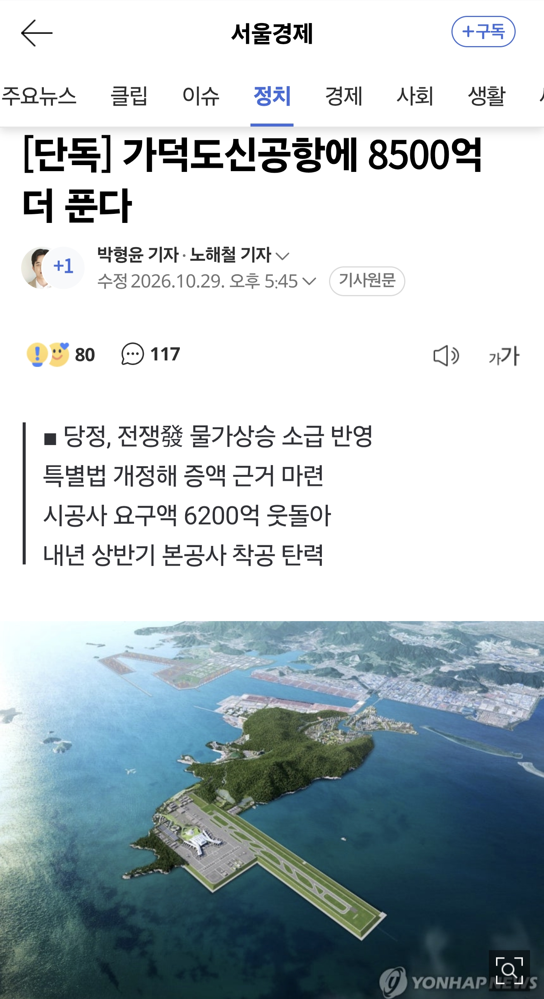

국토교통위원회 관계자는 “중동 전쟁으로 늘어난 공사비를 정부가 수용하기 위해 특별법을 개정한다”며 “공사비 증액 규모는 8500억 원이 될 것”이라고 말했다. 이에 따라 가덕도신공항 건설을 위한 부지 조성 공사비는 10조 7000억 원에서 11조 5500억 원으로 늘어난다.
8500억 원은 가덕도신공항 시공사인 대우건설 컨소시엄이 요구해온 6200억 원을 상회한다. 당초 정부는 중동 전쟁 이후 높아진 공사비지수(4.5%)를 감안해 4800억 원을 기준점으로 제시했으나 당정협의 과정에서 금액이 늘어난 것으로 알려졌다. 다만 국토부 관계자는 “금액은 추후 협의할 문제로 아직 확정적인 금액은 아니다”라며 “법안 발의 후 논의해 확정할 것”이라고 설명했다.
https://n.news.naver.com/article/011/0004676684?sid=100
11조 들여 짓는 공항이니 부디 튼튼하게 만들어지길

부산 신공항은 진짜 수요때문에 짓는거라 뭐..
근데 저긴 바다 매립에 깍아내고 지어야해서 여러모로 걱정이 많긴함 비용도 많이들거고